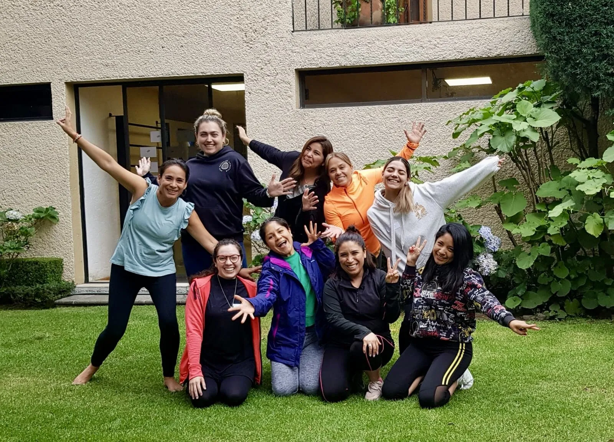

Quiero compartir con ustedes la increíble experiencia que tuvimos durante la formación de Yoga Infantil que se llevó a cabo los días 20 y 21 de mayo de 2023 en el Centro de Yoga Montaña de Comayagua, en la hermosa Ciudad de México. Fue un fin de semana lleno de aprendizaje, crecimiento y conexión con todos los participantes, y estoy emocionada de poder contarles sobre ello.
Como facilitadora de yoga infantil, mi objetivo principal es brindar a los profesionales las herramientas necesarias para comprender y enseñar de manera efectiva a los niños. Esta formación de inmersión, con una duración de 18 horas repartidas en dos días, fue una oportunidad maravillosa para lograrlo.
El Centro de Yoga Montaña de Comayagua nos brindó el ambiente perfecto para sumergirnos en este proceso de aprendizaje. Desde el momento en que ingresamos al espacio, sentimos una energía acogedora y tranquila que nos invitó a abrir nuestras mentes y corazones. El entorno natural y pacífico fue el escenario ideal para nuestro crecimiento personal y profesional.
Durante la formación, exploramos una amplia gama de técnicas y ejercicios diseñados específicamente para trabajar con niños. Desde posturas adaptadas a diferentes edades y niveles de habilidad, hasta juegos creativos y técnicas de relajación, cada sesión fue una oportunidad para profundizar en nuestro entendimiento y habilidades prácticas.
Mi objetivo era transmitir mi pasión por el yoga infantil y compartir mi experiencia con todos los participantes. Me sentí honrada al ver su entusiasmo y compromiso con el aprendizaje. Fomenté la participación activa, el intercambio de ideas y la colaboración entre todos, lo que enriqueció aún más la experiencia de formación.
Una de las partes más gratificantes para mí fue presenciar cómo los participantes se apropiaron de los conocimientos y habilidades que estábamos compartiendo. Ver su crecimiento personal y su confianza en sí mismos como futuros profesores de yoga infantil fue realmente inspirador. Pude notar cómo cada uno de ellas se transformaba y se preparaba para marcar una diferencia positiva en la vida de los niños a través del yoga.
Durante los dos días de formación, no solo nos enfocamos en la práctica del yoga, sino también en la importancia del juego, la creatividad y el desarrollo holístico de los niños. Exploramos estrategias efectivas para mantener su atención y motivación durante las clases, así como técnicas de respiración y meditación adaptadas a sus necesidades.
Además, me complace haber proporcionado a los participantes materiales de apoyo completos, como manuales y recursos adicionales, para que puedan seguir profundizando en su aprendizaje incluso después de finalizada la formación. Es importante para mí brindarles todas las herramientas necesarias para que se sientan seguros y preparados para guiar a los niños en su camino hacia el bienestar físico, mental y emocional.